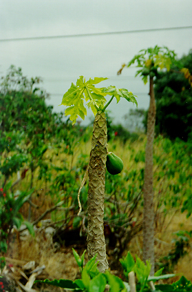

継続研修について
継続研修について
■ 小話の読み込み。クラス、又は、スカイプで行います。
月謝は、オンラインクラス、８０ドル（税込み）から。
メールか電話でお問い合わせくださいませ。
＊小話の英文作成、録音、スカイプレッスンが含まれています。
集中研修について
ご自身のさまざまなアメリカでの生活に専念していただきます。皆さんが描き出された生活の軌跡をゆっくり点検し、振り返り、さらに、これからの原動力をも蓄積していただきたいと思います。個人に焦点を当てた研修を行います。研修内容により、一人、又は、２〜３人で行います。これ以外のプランをご希望の際にはお気軽にご相談くださいませ。
■ ３日間研修
(a) 「３日間 ショートコース」
ショートストーリー作りと読み込み、パーソナル・インターアクションを行います。
１日１時間半を使って３日間。研修費は、お一人２３０ドル（税込み）。
＊すべての研修費には、日本語での文章作りと、英文作成費が含まれています。
(b) 「３日間 半日コース」
ショートストーリー作りと読み込み、パーソナル・インターアクションを行います。
研修費は、お一人４５０ドル（税込み）から。
ファミリーコンタクトを行なう場合の研修費は、５５０ドル（税込み）。
「ゆったりペース」をご希望の方は、４〜５日かけて行ないます。
■ 5日間、7日間、1０日間研修、などをご希望の際にはご相談くださいませ。
■ １週間集中研修 （例 １週間のファミリーコンタクトを含む研修）
ストーリー作りと読み込み、パーソナル・インターアクション、ファミリーコンタクト。
研修費は、お一人１７５０ドル（税込み）。
ご希望の期間、ご予算など、ご相談くださいませ。
何か意味あるものを手にするには根気よく時間をかけなければ、腰を据えて勉強しなくては、といった固定観念を克服していただきたいと思います。
限られた時間の中にあっても、取り組み方によっては将来につながる確かな成果を手にすることができる・・・ナコスでは、そんなことを考えています。
■ ご家族と共にするワークショップ （例 お母様と小さなお子様一人）
ストーリー作りと読み込み練習、パーソナル・インターアクションを行います。
研修費は、親子お二人で６５０ドル（税込み）。
ファミリーコンタクトを行なう場合もあります。
半日を使っての３日間研修、又は、4日〜5日間をかけた「ゆったりペース」でも行います。
ご予算、お子様の年齢、人数など、ご相談くださいませ。
「ご家族と共にするワークショップ」では、相手の人を知ると共に、私達のことを知らせてあげる、といった点に、より重点を置いていただけたらと思っています。
相手の人が好感を持って私達のことを解っていてくれる。これはとても安心なことです。
また、将来、かけがえのない財産となるアメリカの友人、「竹馬の友」、こんなものを創るお手伝いもして差し上げたいと考えています。

E-Mail: nacos@nacos.org
| © 1995-2013 NACOS International Institute. All Rights Reserved. |